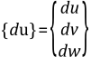
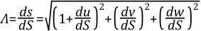
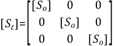

Stress stiffening (also called geometric stiffening, incremental stiffening, initial stress stiffening, or differential stiffening by other authors) is the stiffening (or weakening) of a structure due to its stress state. This stiffening effect normally needs to be considered for thin structures with bending stiffness very small compared to axial stiffness, such as cables, thin beams, and shells and couples the in-plane and transverse displacements. This effect also augments the regular nonlinear stiffness matrix produced by large-strain or large-deflection effects (NLGEOM,ON). The effect of stress stiffening is accounted for by generating and then using an additional stiffness matrix, hereinafter called the “stress stiffness matrix”. The stress stiffness matrix is added to the regular stiffness matrix in order to give the total stiffness. Stress stiffening may be used for static (ANTYPE,STATIC) or transient (ANTYPE,TRANS) analyses. Working with the stress stiffness matrix is the pressure load stiffness, discussed in Pressure Load Stiffness.
The stress stiffness matrix is computed based on the stress state of the previous equilibrium iteration. Thus, to generate a valid stress-stiffened problem, at least two iterations are normally required, with the first iteration being used to determine the stress state that will be used to generate the stress stiffness matrix of the second iteration. If this additional stiffness affects the stresses, more iterations need to be done to obtain a converged solution.
In some linear analyses, the static (or initial) stress state may be large enough that the additional stiffness effects must be included for accuracy. Modal (ANTYPE,MODAL) and substructure (ANTYPE,SUBSTR) analyses are linear analyses for which the prestressing effects can be requested to be included (PSTRES,ON command). Note that in these cases the stress stiffness matrix is constant, so that the stresses computed in the analysis are assumed small compared to the prestress stress.
If membrane stresses should become compressive rather than tensile, then terms in the stress stiffness matrix may “cancel” the positive terms in the regular stiffness matrix and therefore yield a nonpositive-definite total stiffness matrix, which indicates the onset of buckling. If this happens, it is indicated with the message: “Large negative pivot value ___, at node ___ may be because buckling load has been exceeded”. It must be noted that a stress stiffened model with insufficient boundary conditions to prevent rigid body motion may yield the same message.
The linear buckling load can be calculated directly by adding an unknown multiplier of the stress stiffness matrix to the regular stiffness matrix and performing an eigenvalue buckling problem (ANTYPE,BUCKLE) to calculate the value of the unknown multiplier. This is discussed in more detail in Buckling Analysis.
The strain-displacement equations for the general motion of a differential length fiber are derived below. Two different results have been obtained and these are both discussed below. Consider the motion of a differential fiber, originally at dS, and then at ds after deformation.
One end moves {u}, and the other end moves {u + du}, as shown in Figure 3.5: General Motion of a Fiber. The motion of one end with the rigid body translation removed is {u + du} - {u} = {du}. {du} may be expanded as
 | (3–48) |
where u is the displacement parallel to the original orientation of the fiber. This is shown in Figure 3.6: Motion of a Fiber with Rigid Body Motion Removed. Note that X, Y, and Z represent global Cartesian axes, and x, y, and z represent axes based on the original orientation of the fiber. By the Pythagorean theorem,
(3–49) |
The stretch, Λ, is given by dividing ds by the original length dS:
 | (3–50) |
As dS is along the local x axis,
(3–51) |
Next, Λ is expanded and converted to partial notation:
(3–52) |
The binominal theorem states that:
(3–53) |
when A2 < 1. One should be aware that using a limited number of terms of this series may restrict its applicability to small rotations and small strains. If the first two terms of the series in Equation 3–53 are used to expand Equation 3–52,
(3–54) |
The resultant strain (same as extension since strains are assumed to be small) is then
(3–55) |
If, more accurately, the first three terms of Equation 3–53 are used and displacement derivatives of the third order and above are dropped, Equation 3–53 reduces to:
(3–56) |
The resultant strain is:
(3–57) |
For most 2-D and 3-D elements, Equation 3–55 is more convenient to use as no account of the loaded direction has to be considered. The error associated with this is small as the strains were assumed to be small. For 1-D structures, and some 2-D elements, Equation 3–57 is used for its greater accuracy and causes no difficulty in its implementation.
The stress-stiffness matrices are derived based on Equation 3–34, but using the nonlinear strain-displacement relationships given in Equation 3–55 or Equation 3–57 (Cook([5])).
For a spar, the stress-stiffness matrix is given as:
(3–58) |
The stress stiffness matrix for a 2-D beam is given in Equation 3–59, which is the same as reported by Przemieniecki([28]). All beam and straight pipe elements use the same type of matrix. Forces used by straight pipe elements are based on not only the effect of axial stress with pipe wall, but also internal and external pressures on the "end-caps" of each element. This force is sometimes referred to as effective tension.
(3–59) |
where:
| F = force in member |
| L = length of member |
The stress stiffness matrix for 2-D and 3-D solid elements is generated by the use of numerical integration. A 3-D solid element is used here as an example:
 | (3–60) |
where the matrices shown in Equation 3–60 have been reordered so that first all x-direction degrees of freedom are given, then y, and then z. [So] is an 8 by 8 matrix given by:
(3–61) |
The matrices used by this equation are:
(3–62) |
where σx, σxy etc. are stress based on the displacements of the previous iteration, and,
(3–63) |
where Ni represents the ith shape function. This is the stress stiffness matrix for small strain analyses. For large-strain elements in a large-strain analysis (NLGEOM,ON), the stress stiffening contribution is computed using the actual strain-displacement relationship (Equation 3–6).
One further case requires some explanation: axisymmetric structures
with nonaxisymmetric deformations. As any stiffening effects may
only be axisymmetric, only axisymmetric cases are used for the prestress
case. Axisymmetric cases are defined as
 (input as MODE on MODE command) = 0. Then, any subsequent load steps with any value of
(input as MODE on MODE command) = 0. Then, any subsequent load steps with any value of
 (including 0 itself) uses that same stress
state, until another, more recent,
(including 0 itself) uses that same stress
state, until another, more recent,
 = 0 case is available. Also, torsional
stresses are not incorporated into any stress stiffening effects.
= 0 case is available. Also, torsional
stresses are not incorporated into any stress stiffening effects.
Specializing this to SHELL61 (Axisymmetric-Harmonic Structural Shell), only two stresses are used for prestressing: σs, σθ, the meridional and hoop stresses, respectively. The element stress stiffness matrix is:
(3–64) |
(3–65) |
where [As] is defined below and [N] is defined by the element shape functions. [As] is an operator matrix and its terms are:
(3–66) |
where:
The three columns of the [As] matrix refer to u, v, and w motions, respectively. As suggested by the definition for [Sm], the first two rows of [As] relate to σs and the second two rows relate to σθ. The first row of [As] is for motion normal to the shell varying in the s direction and the second row is for hoop motions varying in the s direction. Similarly, the third row is for normal motions varying in the hoop direction. Thus Equation 3–57, rather than Equation 3–55, is the type of nonlinear strain-displacement expression that has been used to develop Equation 3–66.
Quite often concentrated forces are treated numerically by equivalent pressure over a known area. This is especially common in the context of a linear static analysis. However, it is possible that different buckling loads may be predicted from seemingly equivalent pressure and force loads in an eigenvalue buckling analysis. The difference can be attributed to the fact that pressure is considered as a “follower” load. The force on the surface depends on the prescribed pressure magnitude and also on the surface orientation. Concentrated loads are not considered as follower loads. The follower effects is a preload stiffness and plays a significant role in nonlinear and eigenvalue buckling analysis. The follower effects manifest in the form of a “load stiffness matrix” in addition to the normal stress stiffening effects. As with any numerical analysis, you should use the type of loading that best models the in-service component.
The effect of change of direction and/or area of an applied pressure is responsible for the pressure load stiffness matrix ([Spr]) (see section 6.5.2 of Bonet and Wood([237])). It is used either for a large-deflection analysis (NLGEOM,ON), for an eigenvalue buckling analysis, or for a modal, linear transient, or harmonic analysis that has prestressing flagged (PSTRES,ON command).
The need of [Spr] is most dramatically seen when modelling the collapse of a ring due to external pressure using eigenvalue buckling. The expected answer is:
(3–67) |
where:
| Pcr = critical buckling load |
| E = Young's modulus |
| I = moment of inertia |
| R = radius of the ring |
| C = 3.0 |
This value of C = 3.0 is achieved when using [Spr], but when it is missing, C = 4.0, a 33% error.
For eigenvalue buckling analyses, all elements use pressure load stiffness automatically.
[Spr] is derived as an unsymmetric matrix. Symmetricizing is done, unless the command NROPT,UNSYM is used. Processing unsymmetric matrices takes more running time and storage, but may be more convergent.
In a nonlinear analysis (ANTYPE,STATIC or ANTYPE,TRANS), the stress stiffness contribution is activated and then added to the stiffness matrix. When not using large deformations (NLGEOM,OFF), the rotations are presumed to be small and the additional stiffness induced by the stress state is included. When using large deformations (NLGEOM,ON), the stress stiffness augments the tangent matrix, affecting the rate of convergence but not the final converged solution.
The stress stiffness contribution in the prestressed analysis is activated by the prestress flag (PSTRES,ON) and directs the preceding analysis to save the stress state.
In a small deflection/small strain analysis (NLGEOM,OFF), the 2-D and 3-D elements compute their strains using Equation 3–55. The strains (output as EPEL, EPPL, etc.) therefore include the higher-order terms (e.g. in the strain computation. Also, nodal and reaction loads (output quantities F and M) will reflect the stress stiffness contribution, so that moment and force equilibrium include the higher order (small rotation) effects.